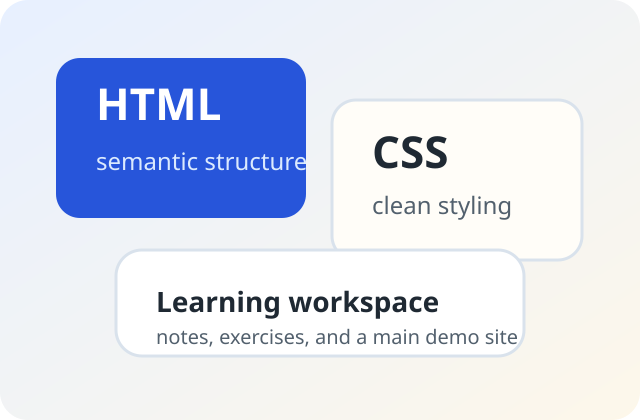

Organized Structure
The repo now separates notes, exercises, and the main site so it is easier to browse and maintain.
Main Demo
This page is the polished example for the repo. It keeps the code simple, improves readability, and shows a clearer structure than the exercise files.

The repo now separates notes, exercises, and the main site so it is easier to browse and maintain.
Styles are grouped into base, layout, components, and responsive rules to keep the CSS beginner-friendly.
The main pages use semantic sections, meaningful titles, and improved link and form labeling.